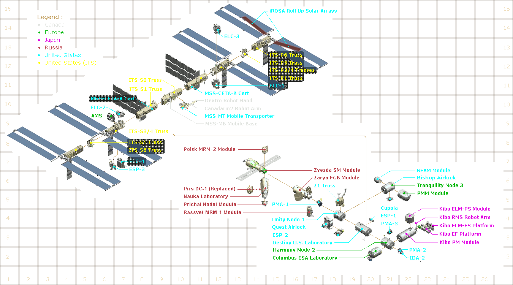

International Space Station (iss)
main components

The main components of the ISS include modules, structures and major equipment items. This page covers the main components which have been assembled in orbit, in sequence, to build the station. Some of these components were pre-assembled before being transported to the station, although most were transported separately.
This article includes additional pages giving an overview of technical details for the main components. To access these pages, refer to the sections below.
This page contains the following two main sections.
Relationship Diagram: Showing the relationship between the components, their position on the station and links to the detail pages of the main components.
Installation and Description: Table showing short and long names of each main component; links to detail pages; reference co-ordinates of the above diagram; installation transport and a brief description.
The diagram below shows the relationships between the main components and their location on the station. (Click on a component or heading to open a detail page) (Grid numbers are used in next section)
The table below lists the main components with links to detail pages (in white) and brief descriptions.
The table is initially sorted in the order of component installation (First column #). It can be re-sorted by clicking on the heading of one of the first four columns.
Click once to sort in A to Z order; click again to sort in Z to A order; click on # heading, or re-load page, to reset. The table header will remain visible during scrolling.
| # ↕ |
Common Name ↕ |
Full Name ↕ |
Location on Station ↕ |
Detail Page |
Image Ref. |
Flight No. |
Transport Spacecraft |
Component Description |
| 01 | Zarya | Functional Cargo Block (FGB) | PMA-1 rear port | Zarya | 16, 5 | 1A/R | Used own engine | Pressurized, used for storage, externally mounted fuel tanks. |
| 02 | PMA-1 | Pressurised Mating Adaptor 1 | Zarya forward port | PMAs | 17, 5 | 2A | Shuttle STS-088 | Connects two pressurized modules. |
| 03 | Unity | Connecting Node 1 | PMA-1 forward port | Nodes | 18, 4 | 2A | Shuttle STS-088 | Connects up to six pressurized modules. |
| 04 | PMA-2 | Pressurised Mating Adaptor 2 | Harmony forward port | PMAs | 22, 2 | 2A | Shuttle STS-088 | For docking spacecraft. |
| 05 | Zvezda | Service Module (SM) | Zarya rear port | Zvezda | 14, 7 | 1R | Used own engine | Pressurized living quarters, provides some station systems. |
| 06 | Z1 Truss | Zenith 1 Truss | Unity top port | Z1 Truss | 18, 5 | 3A | Shuttle STS-092 | External truss housing the Control Moment Gyroscopes. |
| 07 | PMA-3 | Pressurised Mating Adaptor 3 | Harmony top port | PMAs | 21, 3 | 3A | Shuttle STS-092 | For docking spacecraft. |
| 08 | ITS P6 | Port 6 Truss | ITS P5 port end | ITS | 14, 13 | 4A | Shuttle STS-097 | Segment of the Integrated Truss Structure (ITS). |
| 09 | Destiny | US Laboratory Module | Unity forward port | Destiny | 19, 3 | 5A | Shuttle STS-098 | Pressurized module for science. Supports the ITS. |
| 10 | ESP-1 | External Stowage Platform 1 | Destiny port side | ESPs | 20, 4 | 5A.1 | Shuttle STS-102 | Un-pressurized stowage of equipment. |
| 11 | Canadarm2 | Station Remote Manipulator System | Destiny top | Canadarm2 | 11, 10 | 6A | Shuttle STS-100 | Main station external robot arm. |
| 12 | Quest | Joint Airlock | Unity starboard port | Quest | 18, 4 | 7A | Shuttle STS-104 | Airlock for use with U.S. or Russian space suits. |
| 13 | Pirs | Docking Compartment 1 (DC-1) | Zvezda bottom port | Pirs | 14, 5 | 4R | Progress M-SO1 | Airlock for Russian Cosmonauts or for docking spacecraft. |
| 14 | ITS S0 | Starboard zero Truss | Destiny top | ITS | 9, 10 | 8A | Shuttle STS-110 | Segment of the Integrated Truss Structure (ITS). |
| 15 | MSS MT | Mobile Transporter | ITS S0 front | MSS | 10, 10 | 8A | Shuttle STS-110 | Part of the external Mobile Servicing System (MSS). |
| 16 | MSS MB | Mobile Base | MT front | MSS | 10, 10 | UF-2 | Shuttle STS-111 | Part of the external Mobile Servicing System (MSS). |
| 17 | ITS S1 | Starboard 1 Truss | ITS S0 starboard end | ITS | 8, 10 | 9A | Shuttle STS-112 | Segment of the Integrated Truss Structure (ITS). |
| 18 | CETA Cart-A | MSS Crew Equip. Translation Aid | ITS front | MSS | 9, 10 | 9A | Shuttle STS-112 | Part of the external Mobile Servicing System (MSS). |
| 19 | ITS P1 | Port 1 Truss | ITS S0 port end | ITS | 11, 11 | 11A | Shuttle STS-113 | Segment of the Integrated Truss Structure (ITS). |
| 20 | CETA Cart-B | MSS Crew Equip. Translation Aid | ITS front | MSS | 10, 11 | 11A | Shuttle STS-113 | Part of the external Mobile Servicing System (MSS). |
| 21 | ESP-2 | External Stowage Platform 2 | Quest front | ESPs | 18, 3 | LF-1 | Shuttle STS-114 | Un-pressurized stowage of equipment. |
| 22 | ITS P3/P4 | Port 3 and 4 Trusses | ITS P1 port end | ITS | 12, 12 | 12A | Shuttle STS-115 | Segment of the Integrated Truss Structure (ITS). |
| 23 | ITS P5 | Port 5 Truss | ITS P3/P4 port end | ITS | 13, 13 | 12A.1 | Shuttle STS-116 | Segment of the Integrated Truss Structure (ITS). |
| 24 | ITS S3/S4 | Starboard 3 and 4 Trusses | ITS S1 starboard end | ITS | 6, 9 | 13A | Shuttle STS-117 | Segment of the Integrated Truss Structure (ITS). |
| 25 | ITS S5 | Starboard 5 Truss | ITS S3/S4 starboard end | ITS | 5, 8 | 13A.1 | Shuttle STS-118 | Segment of the Integrated Truss Structure (ITS). |
| 26 | ESP-3 | External Stowage Platform 3 | ITS S3 bottom | ESPs | 6, 7 | 13A.1 | Shuttle STS-118 | Un-pressurized stowage of equipment. |
| 27 | Harmony | Connecting Node 2 | Destiny forward port | Nodes | 21, 3 | 10A | Shuttle STS-120 | Connects up to six pressurized modules. |
| 28 | Columbus | ESA Laboratory Module | Harmony starboard port | Columbus | 20, 2 | 1E | Shuttle STS-122 | Pressurized module for science. |
| 29 | Kibo ELM-PS | JEM ELM Pressurized Section | Kibo PM top port | JEM | 22, 4 | 1J/A | Shuttle STS-123 | Pressurized module for science. |
| 30 | Dextre | Sp. Purpose Dextrous Manipulator | ITS front | Dextre | 11, 10 | 1J/A | Shuttle STS-123 | External robot "hand" for maintenance activities. |
| 31 | Kibo PM | JEM Pressurised Module | Harmony port side port | JEM | 22, 3 | 1J | Shuttle STS-124 | Pressurized module for science. |
| 32 | Kibo RMS | JEM Robotic Arm | Kibo PM port end | JEM | 22, 4 | 1J | Shuttle STS-124 | External robot arm used with Kibo pressurized module. |
| 33 | ITS S6 | Starboard 6 Truss | ITS S5 starboard end | ITS | 4, 7 | 15A | Shuttle STS-119 | Segment of the Integrated Truss Structure (ITS). |
| 34 | Kibo EF | JEM Exposed Facility | Kibo PM port end | JEM | 23, 4 | 2J/A | Shuttle STS-127 | External platform used with Kibo pressurized module. |
| 35 | Kibo ELM-ES | JEM ELM Exposed Section | Kibo EF port end | JEM | 23, 4 | 2J/A | Shuttle STS-127 | External platform used with Kibo pressurized module. |
| 36 | Poisk | Mini-Research Module 2 | Zvezda top port | Poisk | 14, 8 | 5R | Progress M-MIM2 | Pressurized module for science and docking spacecraft. |
| 37 | ELC-1 | ExPRESS Logistics Carrier 1 | ITS P3 bottom | ELCs | 12, 11 | ULF3 | Shuttle STS-129 | Un-pressurized stowage of equipment and experiments. |
| 38 | ELC-2 | ExPRESS Logistics Carrier 2 | ITS S3 top | ELCs | 7, 10 | ULF3 | Shuttle STS-129 | Un-pressurized stowage of equipment and experiments. |
| 39 | Tranquility | Connecting Node 3 | Unity port side port | Nodes | 21, 6 | 20A | Shuttle STS-130 | Connects up to six pressurized modules. |
| 40 | Cupola | Cupola Observational Module | Tranquility bottom port | Cupola | 21, 5 | 20A | Shuttle STS-130 | Pressurized module for Earth and station obsevation. |
| 41 | Rassvet | Mini-Research Module 1 | Zarya bottom port | Rassvet | 17, 4 | ULF4 | Shuttle STS-132 | Pressurized module for science and docking spacecraft. |
| 42 | PMM | Permanent Multi Purpose Module | Tranquility forward port | PMM | 22, 5 | ULF5 | Shuttle STS-133 | Pressurized module for storage. |
| 43 | ELC-4 | ExPRESS Logistics Carrier-4 | ITS S3 bottom | ELCs | 7, 7 | ULF5 | Shuttle STS-133 | Un-pressurized stowage of equipment and experiments. |
| 44 | AMS | Alpha Magnetic Spectrometer | ITS S3 top | AMS | 7, 9 | ULF6 | Shuttle STS-134 | Externally mounted science instrument. |
| 45 | ELC-3 | ExPRESS Logistics Carrier-3 | ITS P3 top | ELCs | 12, 14 | ULF6 | Shuttle STS-134 | Un-pressurized stowage of equipment and experiments. |
| 46 | BEAM | Bigelow Expandable Module | Tranquility rear port | BEAM | 20, 6 | SpX-8 | Dragon C110 | Inflatable pressurized test module. Used for storage. |
| 47 | IDA-2 | International docking adapter | PMA-2 forward port | IDAs | 22, 2 | SpX-9 | Dragon C111 | Mounted on PMAs for standardized docking of spacecraft. |
| 48 | Bishop Airlock | Nanoracks Bishop Airlock | Tranquility end port | Bishop | 21, 6 | SpX-21 | Dragon 2 C208 | Airlock for deploying small satellites and experiments. |
| 49 | iROSA | ISS Roll Out Solar Arrays | P6 truss mast cans | iROSA | 14, 14 | SpX-22 | Dragon 2 C209 | Flexible arrays for easier transport to the station. |
| 50 | Nauka | Multipurpose Laboratory module | Zvezda nadir port | Nauka | 14, 6 | 3R | Used own engine | Pressurized module for science. Supports Prichal module. |
| 51 | Prichal | Prichal Nodal Module | Nauka nadir port | Prichal | 14, 5 | 6R | Progress M-UM | Pressurised for Connecting modules and docking spacecraft. |